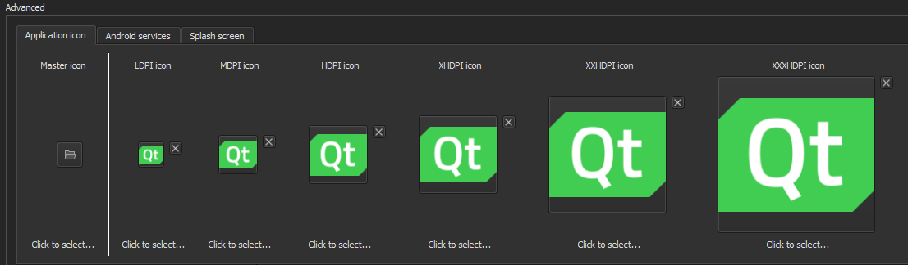
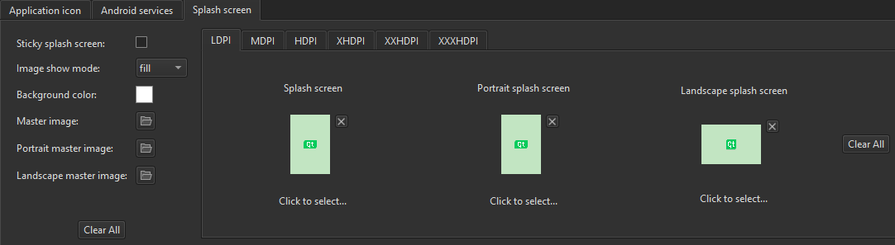
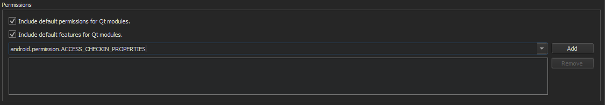

Deploying Applications to Android Devices
On Android, applications are distributed in specially structured types of ZIP packages called Application Packages (APK) or Android App Bundles (AAB). APK files can be downloaded to and executed on a device, whereas AAB is intended to be interpreted by the Google Play store and is used to generate APK files.
Qt for Android has binaries for armv7a, arm64-v8a, x86, and x86-64. To support several different ABIs in your application, build an AAB that contains binaries for each of the ABIs. The Google Play store uses the AAB to generate optimized APK packages for the devices issuing the download request and automatically signs them with your publisher key.
Qt Creator supports the following methods of deployment for Android applications:
- As a stand-alone, distributable application package (APK).
- Since Qt 5.14.0, as an app bundle (AAB), intended for distribution in the Google Play store.
Note: Since Qt Creator 4.12, Ministro is not supported.
To specify settings for application packages, select Projects > Build > Build Android APK > Details.
For more information about options that you have for running applications, see Specifying Run Settings for Android Devices.
Packaging Applications
Because bundling applications as APK packages is not trivial, Qt 5 provides a deployment tool called androiddeployqt. When you deploy an application using a Qt for Android kit, Qt Creator uses the androiddeployqt tool to create the necessary files and to bundle them into an APK:
- Java files, which serve as the entry point into your application and that automatically load Qt and execute the native code in your application.
- AndroidManifest.xml, which provides meta-information about your application.
- Other XML files, which specify the dependencies of your application.
- Resource files.
- Libraries and QML files, which can be included in the project depending on the deployment method that you select.
- Gradle wrappers that are needed to download and use Gradle.
- Gradle script that is needed by Java IDEs, such as Android Studio. It allows the user to extend the Java part without copying our Java sources. It also allows the IDEs to provide code completion, syntax highlighting, and so on.
The Gradle wrappers and scripts are bundled only if you use Gradle to build the application packages. For more information, see Connecting Android Devices.
To view the packages that the androiddeployqt tool created, select the Open package location after build check box.
Specifying Deployment Settings
The available deployment settings are listed in the Method field. To add deployment methods for a project, select Add.

To rename the current deployment method, select Rename.
To remove the current deployment method, select Remove.
The packages are deployed on the Android device that you select in the kit selector. To add devices, select Manage.
For more information about specifying additional start options for applications, see Specifying Run Settings for Android Devices.
To remove previously installed files from the device, select Uninstall the existing app before deployment.
To install a pre-built APK, such as a 3rd-party application to a device, select Install an APK File.
Specifying Settings for Packages
To specify settings for the androiddeployqt tool, select Projects > Build > Build Android APK > Details.

The androiddeployqt tool uses the configuration information to create APKs. For more information about the available options, see androiddeployqt.
You can view information about what the androiddeployqt tool is doing in the Compile Output pane. To view additional information, select the Verbose output check box.
Select Add debug server to include the debug server binary into a package.
Selecting API Level
In the Android build platform SDK field, you can select the API level to use for building the application. Usually, you should select the highest API level available.
Note: For Qt 5.12.0 to 5.12.5 and Qt 5.13.0 to 5.13.1, Android build platform SDK 28 should be used. For more recent versions than Qt 5.13.1, build platform SDK 29 or the most recent one should be used.
This field does not specify the minimum supported API level nor the target API level, which you can specify in the Android manifest. See Editing Manifest Files. For more information about Android API levels, see What is API Level?.
Building AABs
For testing the application locally, use the APK format, because the package can be uploaded directly to the device and run. For distribution to the Google Play store, create an AAB by selecting the Build Android App Bundle (*.aab) check box.
When building with CMake, you can view the selected ABIs in the Initial CMake parameters field in the CMake section. You can set additional ABIs as values of the ANDROID_ABI key:
When building with qmake, you can select the ABIs in the ABIs field in the Build Steps:

Signing Android Packages
To publish your application, you must sign it by using a public-private key pair that consists of a certificate and a corresponding private key and is identified by an alias. The key pair is used to verify that the future versions of your application are actually created by you.
Warning: Keep the key pair in a safe place and take back up copies, because you cannot update the application if you lose the key pair.
You can use Qt Creator to generate a keystore and a self-signed certificate. The generated certificate has the structure of an X.509 v3 digital certificate. It contains information about the version, serial number, and validity period of the certificate, the ID of the algorithm that is used to encrypt the data, the organization that issued the certificate, and the subject (owner) of the certificate. In case of a self-signed certificate, the issuer and owner of the certificate are the same. In addition, the certificate contains information about the algorithm that is used to sign the certificate, as well as the signature of the certificate.
The keystore is protected by a password. In addition, you can protect each alias with its individual password.
When you sign an Android application, you must select a keystore that contains certificates and a certificate alias from the keystore. The public key (certificate) for the alias is embedded into the APK during signing.
To create a keystore and a self-signed certificate:
- In the Keystore field, select Create to create a new keystore that contains one key pair in the Create a Keystore and a Certificate dialog:

- In the Keystore group, enter a password to protect the keystore.
- In the Certificate group, specify the key size and validity period of the certificate. You can specify a separate password to protect the key pair or use the keystore password.
- In the Certificate Distinguished Names group, enter information about yourself and your company or organization that identifies the issuer and the owner of the key pair.
- Select Save.
- In the Keystore File Name dialog, enter a name for the keystore and select a location for it.
- In the Keystore dialog, enter the keystore password to create the key pair in the keystore.
To sign an Android package by using a key pair, set the Sign package group settings described in Specifying Settings for Packages:
- In the Keystore field, select Choose to select an existing keystore.
- In the Certificate alias field, select an alias from the list of key pairs that the keystore contains.
- Select the Sign package check box to use the alias to sign the Android package.
Adding External Libraries
Qt Creator automatically detects which Qt libraries the application uses and adds them as dependencies. If the application needs external libraries, specify them in Projects > Build > Build Android APK > Additional Libraries field. The libraries are copied into your application's library folder and loaded on startup.
To add OpenSSL libraries, select Include prebuilt OpenSSL libraries in the Additional Libraries group. This will add the OpenSSL include project defined in device settings in Android OpenSSL group. This can be used for QMake and CMake projects.
Otherwise, you can manually add the paths to the required libssl.so and libcrypto.so libraries to the Additional Libraries field.
Editing Manifest Files
You can use the configuration options to specify all the settings you need for the androiddeployqt tool. You only need an Adroid manifest file to specify Android-specific settings, such as the application icon. However, the manifest file is needed when you want to publish the package in the Play Store.
Package Names
Android application packages are usually named by using a hierarchical pattern with the levels in the hierarchy separated by periods (.). In general, a package name begins with the top level domain name of the organization followed by the organization's domain name and any subdomain names listed in reverse order. The organization can then choose a specific name for their package. Package names should be written in all lowercase characters whenever possible. For example, org.qtproject.example.
Complete conventions for disambiguating package names and rules for naming packages when the Internet domain name cannot be directly used as a package name are described in section 7.7 of the Java Language Specification.
For more information about package names, see Android Application Fundamentals.
Styling
Qt uses different methods to determine how Qt Widgets and Qt Quick Controls should be styled:
- Select Default or Full when using Qt Widgets or Qt Quick Controls 1 in your project.
Note: This method uses some Android non-SDK interfaces, that are being restricted by Google starting from Android 9.0 (API 28).
- Select Minimal when using Qt Quick Controls 2 but no Qt Widgets or Qt Quick Controls 1. This is faster than using the default or full options.
- Select None when using neither Qt Widgets nor Qt Quick Controls 1 or 2.
Screen Orientation
You can specify different options for determining screen orientation, depending on sensor readings or user preferences. The following table lists the options available.
| Orientation | Description |
|---|---|
| Unspecified | The system chooses the orientation. The policy it uses, and therefore the choices made in specific contexts, may differ from device to device. |
| Behind | Use the same orientation as the activity that's immediately beneath it in the activity stack. |
| Landscape | Landscape orientation, where the display width is larger than its height. |
| Portrait | Portrait orientation, where the display height is larger than its width. |
| Reverse landscape | Landscape orientation in the opposite direction of normal landscape. |
| Reverse portrait | Portrait orientation in the opposite direction of normal portrait. |
| Sensor landscape | Landscape orientation, but it can be either normal or reverse landscape based on the device sensor. The sensor is used even if the user has locked sensor-based rotation. |
| Sensor portrait | Portrait orientation, but it can be either normal or reverse portrait based on the device sensor. The sensor is used even if the user has locked sensor-based rotation. |
| User landscape | Landscape orientation, but it can be either normal or reverse landscape based on the device sensor and the user's preference. |
| User portrait | Portrait orientation, but it can be either normal or reverse portrait based on the device sensor and the user's preference. |
| Sensor | The orientation is determined by the device orientation sensor. The orientation of the display depends on how the user is holding the device. It changes when the user rotates the device. Some devices, however, will not rotate to all four possible orientations by default. To allow all four orientations, select the full sensor option. The sensor is used even if the user locked sensor-based rotation. |
| Full sensor | The orientation is determined by the device orientation sensor for any of the four orientations. This is similar to the sensor option, except that it allows any of the four possible screen orientations, regardless of what the device will normally do. For example, some devices won't normally use reverse portrait or reverse landscape, but this option enables them. |
| No sensor | The orientation is determined without reference to a physical orientation sensor. The sensor is ignored, so the display will not rotate based on how the user moves the device. |
| User | The user's current preferred orientation. |
| Full user | If the user has locked sensor-based rotation, this option behaves in the same way as the user option. Otherwise, it behaves the same as the full sensor option, and allows any of the four possible screen orientations. |
| Locked | Locks the orientation to its current rotation, whatever that is. |
Icons and Splash Screens
You can set different images to be shown as application icons and splash screens on low, medium, high, and extra high DPI displays. The following list summarizes the DPI values typically associated with each category:
- Low-density (LDPI): ~120dpi
- Medium-density (MDPI): ~160dpi
- High-density (HDPI): ~240dpi
- Extra-high-density (XHDPI): ~320dpi
- Extra-extra-high-density (XXHDPI): ~480dpi
- Extra-extra-extra-high-density (XXXHDPI): ~640dpi
Specify settings for icons in the Application icon tab. Select the image with the highest resolution as the Master icon. Qt Creator resizes the icon and sets versions of it to be shown on low, medium, high, and extra high DPI displays, as needed. Alternatively, set the icons for each resolution separately.

Specify settings for splash screens in the Splash screen tab. Select images to display as splash screens depending on the device orientation and screen resolution.

By default, the splash screen is hidden automatically when an activity is drawn. To keep it visible until QNativeInterface::QAndroidApplication::hideSplashScreen() is called, select the Sticky splash screen check box.
In Image show mode, select whether to center the splash screen on the device display or scale it to fill the display.
Set a background color in Background color.
Select the images with the highest resolution as the Master image, Portrait master image, and Landscape master image.
Select Clear All to reset all settings or remove all images.
Android Manifest Editor
If you use qmake as the build system, you can create an Android manifest file and edit it in Qt Creator.
To create an Android manifest file and to open it in the Android Manifest Editor:
- Select Projects > Build > Build Android APK > Create Templates.
- In the Package name field, enter a valid package name for the application. For example,
org.example.myapplication. The application is launched by an automatically generated Java launcher that is packaged with the application into an Android package (.apk).
- You can specify an internal version number for the package in the Version code field. It is used to determine whether one version of the application is more recent than another. In the Version name field, specify the version number that is shown to users.
- In the Minimum required SDK field, select the minimum API level required to run the application. The minimum supported API level for Qt Creator is android-9. However, Qt versions might have different minimum API levels, and therefore Qt Creator does not allow you to select an API level that the Qt version specified for the kit does not support.
- In the Target SDK field, select the targeted API level of the application. This affects the activation of some compatibility features in the OS. The value used by the
androiddeployqttool by default is 14, which means that the overflow button in the system navigation bar will not be enabled by default. - In the Application name field, set the application's name.
- In the Activity name field, set an activity name.
- In the Style extraction field, set the method that Qt uses to determine which UI style to use.
- In the Screen orientation field, select the option for determining screen orientation.
- In Application icon, specify images to use as application icons depending on screen resolution.
- In Splash screen, select images to display as splash screens depending on the screen orientation and resolution.
- In Android services, select Add to add a service. You must enter at least a service class name for a new service. If you select Run in external process, you also need to enter a process name. If you select Run in external library, you need to enter a library name. Service arguments are mandatory for a service that is not run in an external library. For more information about writing service code and structure of services, see Android Services.

- In the Permissions field, you can specify the permissions that your application needs. Starting from Android 6.0 (API 23), permissions have to be requested at runtime (see QtAndroid::requestPermissionsSync() or QtAndroid::requestPermissions()). For lower Android API levels, users are asked to grant the permissions when they install the application. Android OS then grants the application access to the appropriate data and features.

- Select the Include default permissions for Qt modules and Include default features for Qt modules check boxes to add the permissions needed by Qt libraries. This can be
android.permission.WRITE_EXTERNAL_STORAGEfor Qt Core orandroid.permission.ACCESS_COARSE_LOCATIONfor Qt Location. - To add a permission, select it from the list, and then click Add.
On the top header, select the XML Source tab to edit the file in XML format.